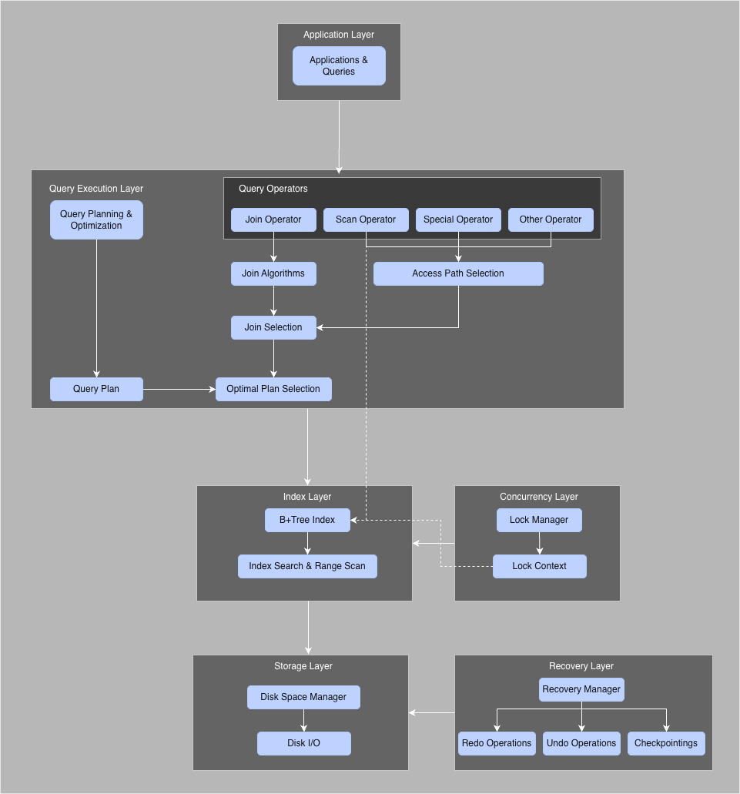

Table of Contents
Overview
This project is based on a minimal relational database implementation that supports executing simple transactions in serial. The system was incrementally extended to support key features expected in modern database systems, with a focus on correctness, performance, and modular design.
The primary goal of this project is to explore the design and implementation of core database internals, including storage indexing, query execution strategies, transaction concurrency, and crash recovery.
System Architecture
The system is composed of the following core components:
- Storage Layer: Manages pages, records, and disk I/O.
- Index Layer: Provides clustered B+Tree indices for efficient record access.
- Query Execution Layer: Implements relational operators and join algorithms.
- Transaction & Concurrency Layer: Handles locking and transaction isolation.
- Recovery Layer: Ensures durability and correctness in the presence of failures.
Architecture Diagram

Implemented Features
- Clustered B+Tree indexing
- Multiple join algorithms with cost-based selection
- Query optimization for multi-table joins
- Multi-granularity locking for concurrent transactions
- ARIES-style logging and crash recovery
B+ Tree Index
- Implemented a clustered B+Tree index to support efficient point lookups and range scans.
- Supports core index operations including search, insert, and delete.
- Handles node split and merge operations to maintain tree balance.
- Integrated with the query execution engine to optimize index-based access paths.
Join Algorithms and Query Optimization
The following join algorithms are implemented and evaluated:
- Nested Loop Join
- Hash Join
- Sort-Merge Join
Through the design and implementation of these algorithms, I gained a deep understanding of their characteristics and how they affect performance under different workloads. Each algorithm is selected based on its performance behavior across varying data sizes and join predicates. Through benchmarking, sort-merge join was chosen for multi-table join workloads, reducing I/O operations from 603 to 8 compared to the baseline implementation.
Query Optimization
The query optimizer uses a cost-based, dynamic programming approach to identify efficient execution plans.
For single-table access, the optimizer selects the lowest-cost access path by comparing sequential scans with eligible index scans, pushing down all single-table selection predicates whenever possible.
For joins, the optimizer incrementally builds left-deep join plans using explicit join predicates, evaluates available join algorithms, and excludes cartesian products.
The final execution plan is selected globally and completed by appending group-by and projection operators.
Concurrency Control
Designed and implemented a multi-granularity concurrency control subsystem based on strict two-phase locking (2PL) to support safe concurrent execution.
- Implemented LockManager with support for lock acquisition, release, promotion, and atomic acquire-and-release, and built hierarchical LockContext abstractions to enforce multi-granularity locking constraints across database, table, page, and record levels.
- Implemented intent locks (IS, IX) alongside shared and exclusive locks (S, X), including correct handling of SIX locks, and lock propagation rules.
- Integrated strict two-phase locking by acquiring locks during query execution and releasing all locks only at transaction completion, ensuring serializability.
Together, these components provide correctness, isolation, and improved concurrency while maintaining modular separation between locking, execution, and storage layers.
Recovery
Implemented a ARIES-style recovery manager to ensure atomicity and durability across system crashes.
- Reconstructed the transaction table and dirty page table during the analysis phase by scanning the log from the most recent checkpoint and correctly handling fuzzy checkpoint semantics.
- Implemented redo logic with pageLSN validation, reapplying only necessary operations from the lowest recLSN to avoid redundant I/O.
- Built a priority-based undo mechanism that rolls back incomplete transactions in descending LSN order using compensation log records (CLRs).
These mechanisms restore the database to a consistent state after failures while minimizing recovery overhead.
Limitations & Future Work
- Cost-based query optimization can be further improved.
- Support for additional isolation levels (e.g., MVCC).
- Enhanced recovery performance under high-concurrency workloads.